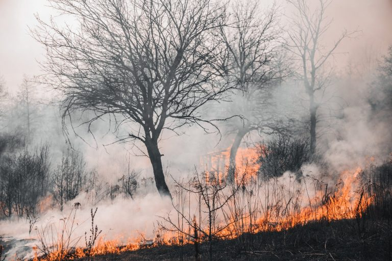

Problemas Ambientais
Os principais problemas ambientais que existem no Brasil e no mundo são ocasionados pela intensificação das atividades humanas, como a produção industrial e a urbanização, pelo manejo inadequado dos solos e pelo uso intensivo e não sustentável dos recursos naturais. Os principais problemas ambientais são os seguintes (BRASIL ESCOLA, 2023):
- Poluição atmosférica;
- Aquecimento global;
- Poluição hídrica e dos solos;
- Desmatamento e queimadas;
Figura 15 - Queima de uma floresta
- Desertificação;
- Perca de biodiversidade;
- Descarte ikrregular de lixo
Quais são os principais problemas ambientais do mundo?
Os principais problemas ambientais do mundo foram causados pela ação antrópica sobre a natureza. Esse processo se intensificou a partir da Revolução Industrial, que data do século XVIII, e começou a ser amplamente discutido em escala internacional a partir da década de 1970, com a realização das conferências ambientais e sobre o clima. Confira a seguir quais são os principais problemas ambientais enfrentados hoje no mundo (BRASIL ESCOLA, 2023).
Poluição atmosférica
A poluição do ar ou atmosférica pode ser descrita como a presença, no ar, de gases poluentes, material particulado, agentes biológicos e outros elementos que alterem a sua qualidade, problema é ocasionado principalmente pela queima de combustíveis fósseis e pela atividade industrial nos grandes centros urbanos, atividades essas que liberam substâncias como gás carbônico (CO2), monóxido de carbono (CO), óxidos de enxofre (SO2 e SO3) e óxido de nitrogênio (NOx) na atmosfera (BRASIL ESCOLA, 2023).
Aquecimento global
O aquecimento global é o aumento anormal da temperatura média do planeta Terra. Esse fenômeno tem como causas a intensa exploração da natureza pelos seres humanos, ocasionando problemas como o desmatamento, e a emissão direta de gases poluentes na atmosfera por meio da atividade industrial e da queima de combustíveis fósseis (BRASIL ESCOLA, 2023).
Esse aumento da temperatura também gera outros problemas ambientais. Uma das principais consequências desse fato são as mudanças climáticas e o acontecimento cada vez mais recorrente de fenômenos extremos, como secas severas, chuvas muito volumosas e intensas, além do derretimento das calotas polares, aumento do nível dos oceanos e a perda da biodiversidade (BRASIL ESCOLA, 2023).
Poluição hídrica
A poluição hídrica acontece quando substâncias são lançadas nos corpos d’água e alteram as suas propriedades físicas, químicas e biológicas, o que pode causar a contaminação e, como consequência, gerar severos prejuízos para a população que depende daquele recurso e para a biodiversidade aquática. O descarte irregular de lixo e de resíduos urbanos, como esgoto, e industriais estão entre as principais causas da poluição hídrica (BRASIL ESCOLA, 2023).
Poluição dos solos
A poluição dos solos é descrita como a degradação química do substrato. Tem origem no descarte irregular de lixo e dejetos urbanos, industriais, da mineração e das usinas geradoras de eletricidade, no uso intensivo de defensivos agrícolas e agrotóxicos para a produção, no desmatamento e outros eventos que contribuem para a perda de fertilidade dos solos (BRASIL ESCOLA, 2023).
Desmatamento
Também chamado de desflorestamento, o desmatamento é a retirada da cobertura vegetal parcial ou total de um determinado lugar. A perda da cobertura vegetal deixa os solos desprotegidos e mais vulneráveis, ao mesmo tempo que afeta o funcionamento dos ecossistemas, contribui para o assoreamento dos rios e interfere na dinâmica dos climas locais e, a longo prazo, do clima global (BRASIL ESCOLA, 2023).
Queimadas
Também chamadas de incêndio florestais, as queimadas humanas são uma prática de limpeza de uma área com o uso de fogo. O fogo das queimadas elimina parte da biodiversidade das matas e contribui para a emissão de gases poluentes na atmosfera.Os incêndios são causados pelo calor extremo e pelo tempo seco, que resseca a vegetação e facilita o espalhamento das chamas (BRASIL ESCOLA, 2023).
Desertificação
A desertificação é um fenômeno de degradação química e física dos solos, resultante do esgotamento da capacidade de produção do solo, o que tem como causas a exploração desse recurso de maneira intensiva para fins econômicos, o manejo inadequado, as queimadas sucessivas e o desmatamento. Fatores de ordem natural podem contribuir para a desertificação de áreas, como a presença de climas secos e as propriedades naturais do substrato (BRASIL ESCOLA, 2023).
Esse processo tem como efeitos a degradação física dos solos, a salinização e o aumento do potencial destrutivo das chuvas nas regiões áridas. Além disso, impacta direta e negativamente a população e a biodiversidade, tendo em vista que a desertificação deixa o solo impróprio para o plantio, dificulta a criação de animais e impede a formação de reservatórios de água potável (BRASIL ESCOLA, 2023)